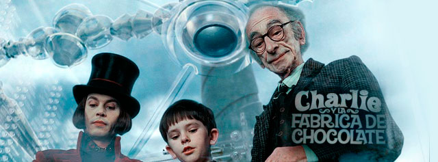

-
"En el mundo no hay nada peor que sentarse frente a un televisor.
De hecho, sería muy recomendable suprimir del todo ese trasto abominable."
-

Escuchando las historias que contaban los ancianos, y así, durante una media hora cada noche,
esta habitación se convertía en un lugar feliz, y la familia entera conseguía olvidar que era pobre y pasaba mucha hambre. "
-

"¡Hay suficiente chocolate para llenar cada bañera del país entero
y todas las piscinas también! "
-

“Al final, Charlie Bucket ganó una fábrica de chocolate, pero Willy Wonka ganó mucho más: una familia.
Y una cosa estaba totalmente clara: la vida jamás había sido tan dulce”